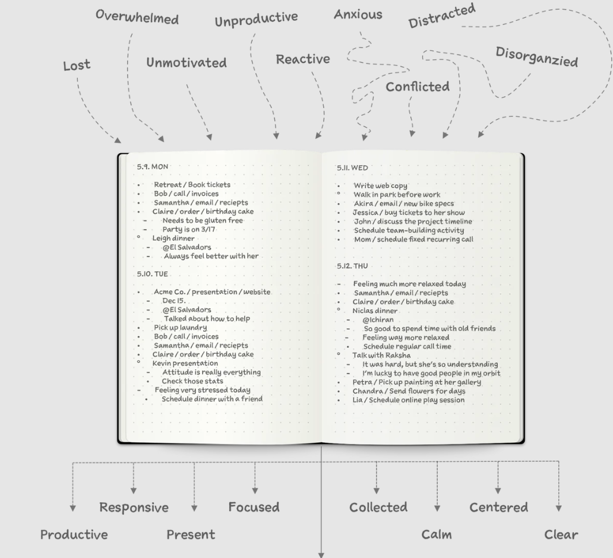
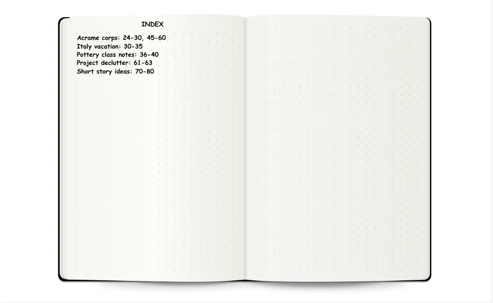
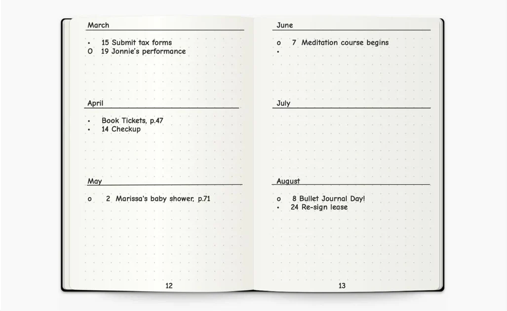
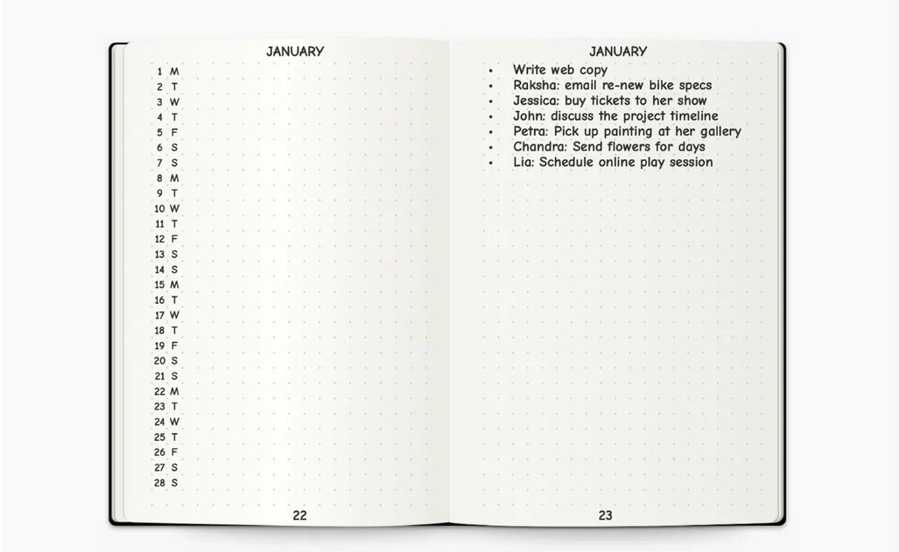

Como já mencionei, o BuJo é uma personalização das folhas de um caderno para organizar e planejar atividades. Isso é feito criando espaços de anotação nas páginas em branco, com caneta, lápis de cor e outros materiais. Mas a verdade é bem simples: o Bullet Journal funciona do jeito que você quiser.
Seu Bullet Journal pode ser praticamente um livro de artista, cheio de desenhos e colagens. Ou pode ser superminimalista, seguindo a ideia de ser uma simples lista diária de afazeres. A pergunta que deve ser feita é: o que funciona para você?
Essa é a essência e a beleza do método: a flexibilidade e a liberdade que ele traz. A sabedoria está em descobrir o formato perfeito para a sua rotina. Veja a seguir como fazer isso!
Adquira seu cadernoEsse é o primeiríssimo passo. Não é possível avançar sem entender como um Bullet Journal poderia te ajudar.
Você pode se perguntar, por exemplo:
Depois de responder a essas e outras perguntas que achar pertinentes, você vai amadurecendo o formato do seu Bullet Journal perfeito. Falaremos disso novamente nos passos 4 e 5.
O Bullet Journal pode ser feito com qualquer caderno, literalmente. O ideal é escolher de acordo com as suas necessidades e preferências. Veja a seguir algumas considerações.
As legendas são códigos usados para sinalizar a natureza da tarefa, seu status ou sua prioridade. Isso é importante para simplificar a rotina e otimizar o tempo por meio de um estímulo visual: você bate o olho e sabe o que já foi feito, o que ainda está na lista e o que é urgente.
Também chamadas de “logs”, as seções do Bullet Journal servem para dividir as categorias de anotações e manter o caderno ordenado. Você pode escolher a quantidade e o tipo das seções, mas algumas são clássicas. Veja a seguir.
Lembra que eu falei que o primeiríssimo passo é entender como é a sua rotina e o que você precisa organizar? Isso vai te ajudar a montar o layout do seu Bullet Journal.
Por exemplo, se todos os dias você tem que fazer várias tarefas impreterivelmente, seu espaço diário deve ser maior. Mas se tem uma tarefa que você precisa fazer na semana, e não necessariamente em um dia específico, que tal deixar um espaço para uma lista genérica de afazeres? Isso evita que você tenha que copiar uma anotação de um dia para o outro, caso não tenha conseguido cumprir a tarefa.
De um lado da página, eu coloco os dias da semana. É aí que eu anoto compromissos com hora marcada, como consultas e reuniões, além de tarefas que devem ser feitas naquele dia específico. Eu gosto desse esquema porque consigo visualizar de uma só vez como será toda a minha semana e os compromissos que eu tenho.
“meu”: reservado para tarefas pessoais. É pequeno porque uso o Bullet Journal mais para tarefas do trabalho;
“espere”: coisas que eu preciso da ajuda ou da resposta de alguém para resolver;
“agora”: tarefas mais urgentes que não precisam ser feitas em um dia específico;
“depois”: outras tarefas que podem ser feitas mais tarde, que não têm a mesma prioridade das que eu coloco no espaço “agora” .
fonte rockcontent
Você tem notas ( - ), ações ( • ), eventos ( o ) e uma adição recente — Humores ( = )!
Como começo o Bullet Journaling? O que você escreve durante o dia? Quanto tempo leva para o Bullet Journal? O que você faz à noite em vez do dia?
Recebemos essas perguntas com frequência, de pessoas que tentaram, pararam e tentaram novamente o Bullet Journaling. Há muitas informações por aí dizendo que seu Bullet Journal precisa de muitos componentes para ser um Bullet Journal.Na verdade, você só precisa de 5 minutos.
No vídeo desta semana, Ryder explica o que fazer com tarefas no seu Bullet Journal que não se encaixam no dia, semana ou mês e só precisam acontecer "algum dia".
Fizemos uma parceria com a Leuchtturm 1917 para trazer a você uma edição especial de sua caneta Drehgriffel extremamente popular. Esta caneta é feita de alumínio e latão fresados com precisão, laqueados e selados. A edição Bujo combina belos detalhes em latão com um acabamento texturizado preto fosco moderno.



